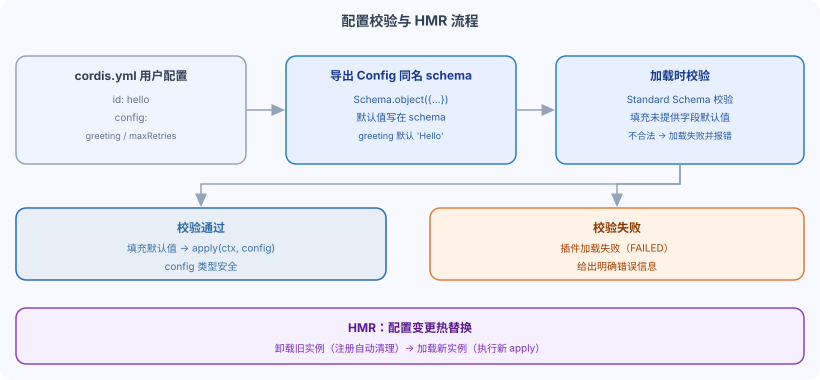

DeepSeek Harness plugin configuration: Config and Schemastery
The greet tool hardcodes the greeting in the code; different deployments would require code changes to change it.
This chapter lets the plugin accept configuration passed from cordis.yml, achieving "separation of configuration and code".
Export the Config type and the schema with the same name
In the plugin, export a Config interface and a Schemastery schema with the same name.
The default value is written directly on the schema field.
Example
import type { Context } from '@deepseek-ai/cordis'
import Schema from '@deepseek-ai/schemastery'
export const name = 'my-plugin'
// Config interface: defines which configuration options the plugin accepts
export interface Config {
greeting: string // Greeting
maxRetries: number // Maximum retry count
verbose?: boolean // Whether to output detailed logs (optional)
}
// Config schema with the same name: default values are written here
export const Config: Schema<Config> = Schema.object({
greeting: Schema.string().default('Hello'),
maxRetries: Schema.number().default(3),
verbose: Schema.boolean().default(false),
})
// The second argument of apply is the validated config
export function apply(ctx: Context, config: Config) {
// Prints the value passed by the user or the schema default value
console.log(config.greeting)
}
The interface provides TypeScript types, while the schema provides runtime validation and default values.
Both have the same name, which is a Cordis convention.
Don't export an ordinary object as Config.
It does not satisfy the Standard Schema interface required by Cordis.
Pass the configuration in cordis.yml.
Add a config field to the newly inserted local plugin line.
Example
- insert:
- id: hello
# The plugin path must be an absolute path (see Part 7)
name: '/absolute/path/to/deepseek-harness/scratch-plugin/src/my-plugin.ts'
config:
greeting: 'Hi there, runoob!'
maxRetries: 5
When the plugin loads, Cordis validates the configuration via the exported schema and fills in default values for fields not provided.
In the above configuration, verbose is not written; it will take the schema default value false.
Schema validation
When stricter validation is needed, use Schemastery to express constraints.
Example
import type { Context } from '@deepseek-ai/cordis'
import Schema from '@deepseek-ai/schemastery'
export const name = 'validated-plugin'
export interface Config {
apiKey: string // Required
timeout: number // Timeout milliseconds
mode: 'fast' | 'accurate' // Can only take one of these two values
}
export const Config = Schema.object({
apiKey: Schema.string().required(),
timeout: Schema.number().default(30000),
mode: Schema.union(['fast', 'accurate']).default('fast'),
})
export function apply(ctx: Context, config: Config) {
// config has been validated and is type-safe
}
Schema executes validation when the plugin loads.
If the configuration is invalid, the plugin will fail to load and provide a clear error message.
Design principle: no hardcoded tunable parameters.
The Harness convention is: any parameter that might need to take different values in different deployments must be defined as a configuration field.
Incorrect and correct usage
const TIMEOUT = 30000
// Correct: Define as a configuration field; the default value is still provided by the schema.
export interface Config {
timeoutMs: number // Default 30000
}
The test standard in one sentence: can you change this value in cordis.yml without modifying code?
If yes, it is a qualified adjustable parameter; if not, it should be promoted to a configuration field.
HardcodingIt is hardcoding values that should have been adjustable in the code.
It turns "changing configuration" into "changing code and redeploying", a common source of production incidents.
Configuration errors should be loud
Express self-contained constraints in the schema, so that invalid configurations fail when the plugin loads.
References to services or registered resources require dependency injection; the service tutorial will introduce this convention.
Working with HMR: hot config replacement.
Configuration changes trigger hot module replacement (HMR) for the plugin.
After modifying the config of a plugin in cordis.yml, the framework unloads the old instance and loads the new one.
Since all registrations are effects and are automatically cleaned up, the old instance's registrations will not be retained after replacement.

Summary and self-test
Export the Config interface and the same-name schema, write default values into the schema, validate configuration on load; all adjustable parameters go into configuration.
other extensions1. Why write default values in the schema rather than in code?
2. What happens when the configuration is invalid?
3. What is the standard for checking "no hardcoding"?